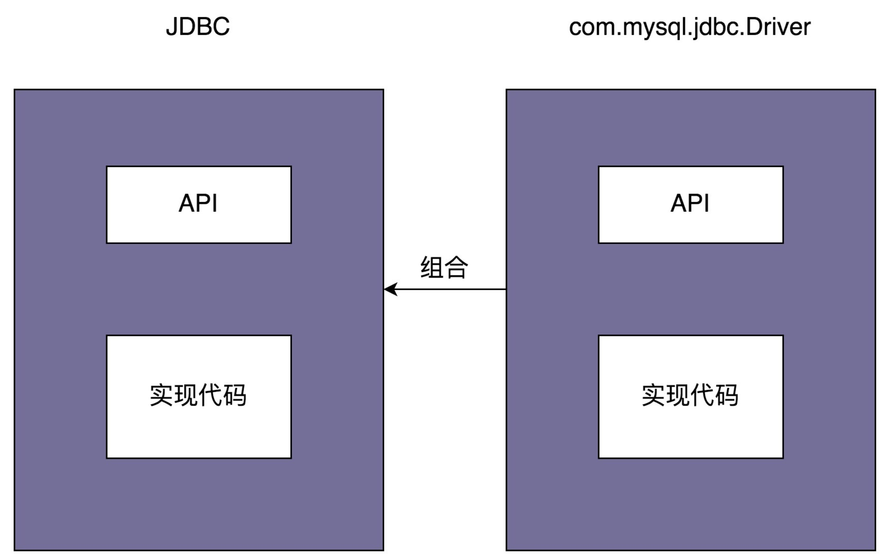

目录
Bridge-桥接模式¶
Note
Decouple an abstraction from its implementation so that the two can vary independently.将抽象和实现解耦，让它们可以独立变化。
桥接模式有两种理解方式:
1. 是“将抽象和实现解耦，让它们能独立开发”(GoF)
2. 类似“组合优于继承”设计原则
Note
另一种理解：“一个类存在两个（或多个）独立变化的维度，我们通过组合的方式，让这两个（或多个）维度可以独立进行扩展。” 通过组合关系来替代继承关系，避免继承层次的指数级爆炸。
桥接模式的应用举例¶
实例1-JDBC驱动是桥接模式的经典应用:
JDBC跟具体的数据库无关的、被抽象出来的一套 “类库”
具体的 Driver（比如，com.mysql.jdbc.Driver）就相当于 “实现”
JDBC 和 Driver 独立开发，通过对象之间的组合关系，组装在一起。
JDBC 的所有逻辑操作，最终都委托给 Driver 来执行。

实例2-根据不同的告警规则，触发不同类型的告警:
1. 告警支持多种通知渠道，包括：邮件、短信、微信、自动语音电话
2. 通知的紧急程度有多种类型，包括：SEVERE、URGENCY、NORMAL、TRIVIAL
3. 不同的紧急程度对应不同的通知渠道：SERVE（严重）级别的消息会通过 “自动语音电话” 告知相关人员
Notification 类相当于抽象，MsgSender 类相当于实现，
两者可以独立开发，通过组合关系（也就是桥梁）任意组合在一起。
所谓任意组合的意思就是，不同紧急程度的消息和发送渠道之间的对应关系